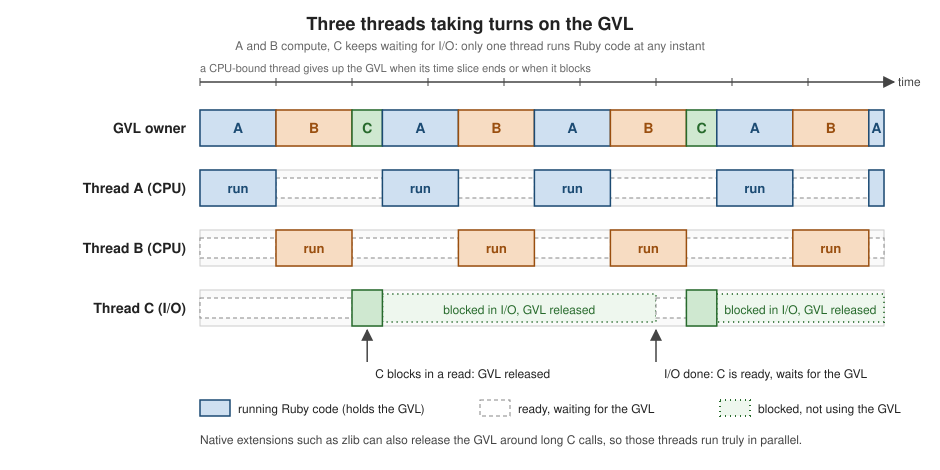

Threads and the GVL
|
This content was generated with the assistance of AI and should be verified against the official documentation before being relied on in production. |
This page is written against Ruby 4.0 (4.0.7, checked on 2026-10-18); features newer than Ruby 3.0 name the version that introduced them.
A thread is an independent flow of control inside one Ruby process: it has its own call stack and its own local state, and it
shares every object, constant, global variable and class with the other threads. The reference implementation, CRuby (also
called MRI), schedules Ruby threads onto operating-system threads but lets only one of them run Ruby code at a time, using
a lock that the community calls the GVL (global VM lock, historically the GIL). This page covers the whole picture:
creating and ending threads, what happens when a thread fails, thread-local and fiber-local storage, what the GVL does and
does not guarantee (the difference between I/O-bound and CPU-bound work, and the M:N scheduler of Ruby 3.3), the
synchronization tools (Mutex, Monitor, ConditionVariable, Queue and SizedQueue), deadlocks, interrupting threads
(Thread#raise, Thread.handle_interrupt, Timeout), and why ||= memoization and class-level state need care.
Alternative implementations such as JRuby and TruffleRuby run threads in parallel without a GVL; everything below describes CRuby.
Threads are one of three concurrency tools in Ruby 4.0. Fibers, the cooperative building block behind non-blocking I/O, are in
Fibers and the Fiber Scheduler; Ractors, the way to run Ruby
code in parallel inside one process, are in Ractors. Separate processes, signals
and fork are in Processes, Signals and Shell, and the
exception classes used here are introduced in
Exceptions and Error Handling. For the same ideas in other
languages see Python concurrency and async (which has a GIL of its own),
Java virtual threads,
PHP fibers,
Rust threads and message passing,
Go goroutines and the scheduler and
C# threads and synchronization.
Every example on this page was syntax-checked with ruby -wc, run with ruby -w on Ruby 4.0.7 and linted with RuboCop 1.92
using the configuration of the running shelf gem (target Ruby 4.0, double-quoted strings). The output shown in # =>
comments, and in the output blocks, is the real output; a few outputs depend on timing or on the machine (they are marked) and
were produced on a ten-core Mac. Thread inspect strings show an address, which the output blocks abbreviate as 0x....
Each file is self-contained so it can be run on its own, and the ones that need the running shelf scenario carry a trimmed copy of the
class they use.
Concurrency in Ruby at a glance
Ruby has four ways to do more than one thing at a time. They differ in what they share, who decides when to switch, and whether Ruby code runs in parallel.
| Tool | Isolation and sharing | Who switches | Parallel Ruby code? |
|---|---|---|---|
Process ( |
Separate memory; communicate through pipes, sockets or files. |
The operating system. |
Yes, on several cores. |
Thread ( |
Share all objects of the process. |
The VM, on a timer and whenever a thread blocks. |
No in CRuby: one thread runs Ruby code at a time (the GVL). Blocking calls and some native code run in parallel. |
Fiber ( |
Share all objects of their thread. |
The program, explicitly ( |
No: fibers of one thread never run at the same instant. |
Ractor ( |
Isolated heaps; only shareable objects cross the boundary, by message passing. |
The VM, per Ractor. |
Yes, one GVL per Ractor. Experimental in 4.0. |
The rule of thumb that follows from the table: use threads when the program spends its time waiting (network, disk, a subprocess, a database), use processes or Ractors when it spends its time computing, and use fibers with a scheduler when there are so many concurrent waits that one operating-system thread per wait is too heavy. Threads are still the right default for I/O concurrency in a typical program, because every blocking call in the core library and in most extensions releases the GVL while it waits.
Creating and ending threads
Thread.new, start and fork
Thread.new starts a new thread that runs the block immediately and returns the Thread object. Thread.start and
Thread.fork do the same (they are aliases of each other) but skip the subclass’s initialize; Thread.new without a block raises
ThreadError (must be called with a block). Arguments given to Thread.new are passed to the block as parameters, which is the
safe way to hand a thread its own value: a block that closes over a loop variable shares that variable with the loop.
Thread#join waits for the thread to finish and returns the thread; join(limit) waits at most limit seconds and returns nil
on a timeout, leaving the thread running. Thread#value joins the thread and returns the value of its block (the last expression
evaluated), so it is the natural way to collect a result. Both re-raise, in the calling thread, any exception that ended the target
thread (covered below). A thread that nobody joins is simply killed when the main thread ends: the program does not wait for it.
The example looks up two ISBNs on two threads, waits with a limit, and shows the status values of finished and failed threads.
# frozen_string_literal: true
# Thread.new starts the block at once on a new thread; the arguments are
# passed to the block, which keeps them out of the closure.
isbns = %w[9780306406157 9780140449136]
lookups = isbns.map do |isbn|
Thread.new(isbn) do |digits|
Thread.current.name = "lookup-#{digits[-4..]}"
sleep 0.01
digits.reverse
end
end
lookups.map(&:value) # => ["7516046030879", "6319440410879"]
lookups.map(&:name) # => ["lookup-6157", "lookup-9136"]
lookups.map(&:status) # => [false, false]
lookups.map(&:alive?) # => [false, false]
# join(limit) gives up after the limit and returns nil; the thread keeps running.
slow = Thread.new { sleep 0.2 }
slow.join(0.01) # => nil
slow.status # => "sleep"
slow.join # => #<Thread:0x... thread_basics.rb:21 dead>
slow.status # => false
# A thread that ends with an exception reports nil from status.
failed = Thread.new do
Thread.current.report_on_exception = false
raise IOError, "disk full"
end
sleep 0.05
failed.status # => nil
begin
failed.join
rescue IOError => e
e.message # => "disk full"
end
Thread.main.equal?(Thread.current) # => true
Thread.list.size # => 1Source: Ruby 4.0 documentation: Thread
Thread names (Thread#name=) appear in inspect and in the failure report, which makes them worth setting for any long-lived
thread. Thread#native_thread_id returns the operating-system id of the thread that currently backs a Ruby thread, which is what
profilers and top -H show.
Status and lifecycle
Thread#status returns a string while the thread is alive and false or nil afterwards. Thread#alive? is true until the
thread ends, and Thread#stop? is true when the thread is dead or sleeping.
status |
Meaning |
|---|---|
|
The thread is running, or is ready to run and waiting for the GVL. |
|
The thread is sleeping, blocked on I/O, a lock, a queue or a join, or stopped with |
|
The thread is being killed and is running its |
|
The thread finished normally (or was killed). |
|
The thread ended with an exception. |
Threads can be moved between those states from outside. Thread.stop puts the current thread to sleep until another thread calls
wakeup on it (which only marks it eligible) or run (which also schedules it right away). Thread.pass is a hint that the
scheduler may switch to another thread; the interpreter may or may not do so. Thread#priority= is another hint, in the range -3
to 3 and ignored on some platforms, so a program must never depend on it for correctness. Thread#kill, Thread#exit,
Thread#terminate and Thread.exit all end a thread and run its ensure clauses. A ThreadGroup collects threads for
bulk operations (ThreadGroup#list); every new thread joins the group of the thread that created it.
# frozen_string_literal: true
# status: "run" while running, "sleep" while blocked or sleeping, false when finished
# normally, nil when ended by an exception, "aborting" while being killed.
napper = Thread.new { Thread.stop }
Thread.pass until napper.stop?
napper.status # => "sleep"
napper.stop? # => true
napper.alive? # => true
# wakeup marks the thread runnable; run also schedules it right away.
napper.wakeup.equal?(napper) # => true
napper.join
napper.status # => false
Thread.current.status # => "run"
Thread.main.priority # => 0
# Threads belong to a ThreadGroup, inherited from the creating thread.
group = ThreadGroup.new
member = Thread.new { sleep }
group.add(member).equal?(group) # => true
group.list.first.equal?(member) # => true
member.group.equal?(group) # => true
ThreadGroup::Default.list.include?(Thread.main) # => true
member.kill
member.join
# A name makes inspect and debugging output readable.
named = Thread.new { sleep }
named.name = "returns-desk"
Thread.pass until named.stop?
puts named.inspect.sub(/0x\h+/, "0x...") # prints #<Thread:0x...@returns-desk thread_lifecycle.rb:30 sleep>
named.kill
# Thread.exit, Thread.current.exit and Thread#kill all end the target thread.
Thread.new { Thread.exit }.value # => nilOutput of the puts line (the address varies):
#<Thread:0x...@returns-desk thread_lifecycle.rb:30 sleep>Source: Ruby 4.0 documentation: Thread and ThreadGroup
Two lifecycle rules are worth remembering. The main thread’s end ends the program, and all other threads are killed without
being joined (their ensure clauses do run, but a program that needs a thread’s work to finish must join it). And after fork,
only the thread that called fork exists in the child process; the other threads vanish, and a lock that one of them held can
never be released in the child. The next example makes the difference between a process and a thread visible: the child changes
its own copy of the counter, the thread changes the shared one.
# frozen_string_literal: true
# Processes have separate memory; threads share it. After fork, only the thread
# that called fork exists in the child.
counter = 0
helper = Thread.new { sleep }
Thread.pass until helper.stop?
reader, writer = IO.pipe
pid = fork do
reader.close
counter += 1
writer.puts "child: threads=#{Thread.list.size}, counter=#{counter}"
writer.close
end
writer.close
puts reader.read
Process.wait(pid)
puts "parent: threads=#{Thread.list.size}, counter=#{counter}"
thread_counter = 0
Thread.new { thread_counter += 1 }.join
puts "after a thread: counter=#{thread_counter}"Output:
child: threads=1, counter=1
parent: threads=2, counter=0
after a thread: counter=1Exceptions in threads
An exception that is not rescued inside a thread ends only that thread. It does not propagate to other threads by default: the
exception is stored in the Thread object and raised again, in whichever thread calls join or value on it. Because a
thread that nobody joins can fail silently, Ruby reports the failure on standard error the moment the thread dies. The report is
controlled by report_on_exception, which is true by default (since Ruby 2.5), and exists as a global setting
(Thread.report_on_exception=, which sets the default for threads created afterwards) and as a per-thread setting
(Thread#report_on_exception=, normally set as the first statement of the thread’s block).
A second switch, abort_on_exception, goes the other way and re-raises the exception of a dying thread in the main thread at
once. It exists globally (Thread.abort_on_exception=), per thread (Thread#abort_on_exception=), and is also turned on by the
-d command-line option or $DEBUG = true. It is useful in short scripts and tests where any failing thread should stop the whole
program, and it is rarely appropriate in a server, where the main thread would be interrupted at an arbitrary point.
The same program shows the four situations. The report lines on standard error come from case 1, where the failure is both
reported and re-raised by join.
# frozen_string_literal: true
# Standard output and standard error are separate streams; unbuffered output keeps them in order.
$stdout.sync = true
def attempt(label)
yield
rescue StandardError => e
puts "#{label}: #{e.class}: #{e.message}"
end
# 1. By default the error is reported on $stderr as soon as the thread dies,
# and raised again in whoever calls join or value.
worker = Thread.new { Integer("9780306406157x") }
attempt("join re-raises") { worker.join }
puts "status after the error: #{worker.status.inspect}"
# 2. report_on_exception = false silences the report; the error still waits in the thread.
Thread.report_on_exception # => true
quiet = Thread.new do
Thread.current.report_on_exception = false
raise KeyError, "no such shelf"
end
attempt("quiet join") { quiet.join }
attempt("quiet value") { quiet.value }
# 3. abort_on_exception = true re-raises the error in the main thread at once.
attempt("abort_on_exception") do
Thread.new do
Thread.current.abort_on_exception = true
Thread.current.report_on_exception = false
raise IOError, "catalogue unreachable"
end
sleep 1
end
# 4. Thread#raise delivers an exception to another thread, and Thread#kill ends it.
sleeper = Thread.new do
sleep
rescue RuntimeError => e
"woken by #{e.message}"
end
Thread.pass until sleeper.stop?
sleeper.raise("wake up")
sleeper.value # => "woken by wake up"The output, with standard error and standard output merged (the thread inspect address varies):
#<Thread:0x... thread_errors.rb:14 run> terminated with exception (report_on_exception is true):
thread_errors.rb:14:in 'Kernel#Integer': invalid value for Integer(): "9780306406157x" (ArgumentError)
worker = Thread.new { Integer("9780306406157x") }
^^^^^^^^^^^^^^^^
from thread_errors.rb:14:in 'block in <main>'
join re-raises: ArgumentError: invalid value for Integer(): "9780306406157x"
status after the error: nil
quiet join: KeyError: no such shelf
quiet value: KeyError: no such shelf
abort_on_exception: IOError: catalogue unreachableSource: Ruby 4.0 documentation: Thread
A few details of that output are worth reading closely. The first line names the thread by its inspect string and tells
which setting produced the report. The next lines are the ordinary uncaught-exception report, with the error-highlight excerpt that
Ruby 3.1 added. status is nil (not false) because the thread ended with an exception. And case 3 shows why
abort_on_exception must be used with care: the IOError from the worker was raised inside the main thread’s sleep.
The practical rules are short. Rescue and handle what you can inside the thread. Always join, or collect value, from every
thread whose failure matters, so the error reaches code that can act on it. Turn the report off only for a thread that will certainly
be joined. And never rely on Thread.abort_on_exception = true in library code, because it changes the behaviour of every
thread in the process, including threads created by other libraries.
Thread-local and fiber-local storage
A thread often needs private state: the current request, a database connection, a user. Local variables are private to a thread automatically when they are defined inside the thread’s block, since the block is an ordinary closure. For state that has to be reachable from many methods without being passed along, Ruby offers three levels of "current" storage, and the names are confusing enough to deserve a table.
| API | Scope | Notes |
|---|---|---|
|
One thread and one fiber: a fiber-local. |
Despite the class it is stored on, each fiber has its own bucket. A new fiber sees nothing the thread stored. |
|
One thread, shared by all of its fibers: a true thread-local. |
Use these when the value must be visible from every fiber of the thread. |
|
Inheritable storage: copied into every fiber and thread created afterwards. |
The unit is an execution context, for example one request. The copy is made at creation, so changes in a child are not visible
to the parent. |
The example shows all three. The fiber sees the thread-local but not the fiber-local, a new thread sees neither, and Fiber storage flows into both child fibers and child threads.
# frozen_string_literal: true
# Thread#[] is fiber-local despite its name; thread_variable_get is thread-local.
Thread.current[:request] = "main-fiber"
Thread.current.thread_variable_set(:user, "alice")
fiber = Fiber.new do
[Thread.current[:request], Thread.current.thread_variable_get(:user)]
end
fiber.resume # => [nil, "alice"]
# A new thread starts with empty locals of both kinds.
Thread.new { [Thread.current[:request], Thread.current.thread_variable_get(:user)] }.value # => [nil, nil]
Thread.current.key?(:request) # => true
Thread.current.keys # => [:request]
Thread.current.thread_variable?(:user) # => true
Thread.current.thread_variables # => [:user]
Thread.current.fetch(:request) # => "main-fiber"
Thread.current.fetch(:missing, "default") # => "default"
# Fiber storage (3.2) is inherited by the fibers and threads created afterwards.
Fiber[:request_id] = "req-42"
Fiber.new { Fiber[:request_id] }.resume # => "req-42"
Thread.new { Fiber[:request_id] }.value # => "req-42"
# Inheritance is a copy: a child that assigns does not change its parent.
Thread.new { Fiber[:request_id] = "child" }.join
Fiber[:request_id] # => "req-42"
# Fiber.new(storage: nil) starts with no storage at all.
Fiber.new(storage: nil) { Fiber[:request_id] }.resume # => nil
Fiber.current.storage # => {request_id: "req-42"}Source: Ruby 4.0 documentation: Thread and Fiber
Which one to pick follows from the question "what is the unit of work?". A request handled by a thread-per-request server is a
thread, but a server that runs each request in a fiber (or a framework that moves work between fibers) makes Thread#[]
the right choice only if the data must not leak into other fibers of the same thread. Per-thread caches that survive across fibers,
such as a reusable buffer, are thread_variable_get. A request id or a logging level that should follow the work into the fibers and threads that
the request spawns is Fiber storage, which exists exactly for that purpose (the 3.2 release notes name connection pools, request ids,
loggers and configuration as its uses). Be aware that all three are global state with a narrower scope, so a
method that reads them has a hidden input: pass values explicitly where it is cheap, and keep the storage for cross-cutting
concerns. The
application architecture page returns to this trade-off.
Ractors have a fourth level: Ractor[] and Ractor[]= (3.4) store per-Ractor values, and Ractor.store_if_absent initializes them
safely (see Ractors).
The GVL
What the GVL is
CRuby protects its internal data structures (the object heap, the method caches, the garbage collector) with a lock. In the thread-based model that lock is the GVL: a thread must hold it to execute Ruby code, and the VM passes it from thread to thread. Two events make the running thread give it up:
-
The thread blocks. Any blocking operation implemented by the core library (
sleep, reading from a socket, waiting for a subprocess,Queue#popon an empty queue,Mutex#lockon a held lock) releases the GVL for the duration of the wait, so other threads run meanwhile. This is why threads give real concurrency for I/O. -
The time slice ends. A timer thread interrupts the running thread when it has used its share, and the VM hands the GVL to another thread that is ready. A CPU-bound thread therefore does not starve its siblings, but it also does not run in parallel with them.
The next program starts two threads that only compute, and logs when each one gets control back after a gap. The gaps are the time slices (the numbers vary from run to run by a few milliseconds; they are about 100 ms on this machine).
# frozen_string_literal: true
log = Thread::Queue.new
stop = false
workers = %i[a b].map do |name|
Thread.new do
last = nil
until stop
now = Process.clock_gettime(Process::CLOCK_MONOTONIC)
log << [name, now] if last.nil? || now - last > 0.02
last = now
end
end
end
sleep 1
stop = true
workers.each(&:join)
log.close
events = Array.new(log.size) { log.pop }.sort_by(&:last)
base = events.first.last
turns = events.map { |name, time| "#{name}@#{((time - base) * 1000).round}ms" }
puts turns.first(8).join(" ")Output (timing dependent):
a@0ms b@110ms a@220ms b@330ms a@443ms b@558ms a@668ms b@778msSource: Ruby 4.0 documentation: Thread
The figure shows the same mechanism for three threads, one of which spends most of its time waiting for I/O.

Three consequences follow, and they are the corrections to a widespread folk model of Ruby concurrency:
-
Threads speed up waiting, not computing. Four threads that each wait 200 ms finish in about 200 ms; four threads that each compute for a second of pure Ruby take about four seconds, the same as one thread after the other, plus a little switching overhead.
-
"Adding more threads does not help throughput" is too strong. It is true for pure Ruby computation. It is false for programs that spend most of their time in blocking calls, which is most programs that talk to a network or a disk. A thread pool sized for the number of concurrent requests is a perfectly good design.
-
Native code can run in parallel. A C extension, or the core library, releases the GVL around a long native call so that other threads can use it:
zlibcompression,IO#readandIO#write,Process.waitandIO::Buffer#copy(3.4) are examples in the core and standard library. Whether the native code of a given gem does depends on how it is written, and the documentation of the gem is the only reliable source.
The measurement below puts numbers on the three cases: sleeping (standing in for a blocking read), pure Ruby arithmetic and
zlib compression. Each runs four jobs serially and then on four threads, and the output is the ratio of the two times.
# frozen_string_literal: true
require "zlib"
# Pure Ruby CPU work: a naive checksum over many strings.
def checksum_work(rounds)
rounds.times.sum { |i| (i.to_s * 3).sum }
end
# Waiting work: sleep stands in for a blocking read from a slow service.
def lookup_work = sleep(0.2)
# Native work that releases the GVL: compressing 8 MB of random bytes with zlib.
def compress_work(payload) = Zlib::Deflate.deflate(payload).bytesize
def seconds
started = Process.clock_gettime(Process::CLOCK_MONOTONIC)
yield
Process.clock_gettime(Process::CLOCK_MONOTONIC) - started
end
def in_threads(count, &)
Array.new(count) { Thread.new(&) }.each(&:join)
end
jobs = 4
payload = Random.new(1).bytes(8_000_000)
wait_serial = seconds { jobs.times { lookup_work } }
wait_threads = seconds { in_threads(jobs) { lookup_work } }
ruby_serial = seconds { jobs.times { checksum_work(300_000) } }
ruby_threads = seconds { in_threads(jobs) { checksum_work(300_000) } }
zlib_serial = seconds { jobs.times { compress_work(payload) } }
zlib_threads = seconds { in_threads(jobs) { compress_work(payload) } }
puts format("waiting: threads take %<r>.2f times the serial time", r: wait_threads / wait_serial)
puts format("pure Ruby: threads take %<r>.2f times the serial time", r: ruby_threads / ruby_serial)
puts format("zlib: threads take %<r>.2f times the serial time", r: zlib_threads / zlib_serial)Output (the exact ratios depend on the machine and the load; the shape does not):
waiting: threads take 0.25 times the serial time
pure Ruby: threads take 1.03 times the serial time
zlib: threads take 0.32 times the serial timeSource: Ruby 4.0 documentation: Thread and Process
With a ratio near 0.25 the four jobs overlapped completely (waiting, and zlib, which releases the GVL); with a ratio near 1.0
they ran one after another (pure Ruby). A ratio above 1.0 for CPU-bound threads is normal and is the cost of the time-slice switching.
What the GVL does not give you
The GVL makes each call of a core C method indivisible with respect to the other Ruby threads: appending to an Array from
eight threads loses no elements, and a Hash cannot be corrupted into a crash. Many programs lean on this, and it is the reason that
simple counters and flags rarely misbehave in testing. But it is an implementation property, not a language guarantee, and
it stops at the boundary of one method call. A sequence of calls, such as "check whether the key exists, then add it", can be
interrupted between the calls, because the VM may switch threads at the end of any time slice, at a blocking call and at several
other safe points. A single Ruby-level statement like count += 1 is a read, an add and a write, and the switch can land in
between. JRuby and TruffleRuby run threads in parallel, so code that is only correct because of the GVL breaks there at once.
The rule therefore does not change: shared mutable state needs a lock, and the next sections show the tools.
The GVL also relates to the other concurrency tools. Each Ractor has its own GVL, which is why Ractors can run Ruby code in
parallel (the threads inside one Ractor still share that Ractor’s GVL). A fiber belongs to one thread, so it holds the thread’s turn
and needs no lock for state that only that thread touches. And the Ruby 4.0 notes record that deadlocks when Ractors and threads were combined were
fixed. The contributor documentation (contributing/concurrency_guide_md) describes the internal VM lock, the timer thread and the interrupt
handling for people working on CRuby itself, and also states that "GVL" is better understood as a family of locks since Ractors exist.
The M:N thread scheduler (Ruby 3.3)
By default every Ruby thread is backed by one operating-system thread (a 1:1 model). Ruby 3.3 introduced an M:N scheduler, which multiplexes many Ruby threads (M) onto a smaller pool of native threads (N). It reduces the cost of programs with thousands of mostly sleeping threads: a thread blocked in Ruby no longer pins a native thread. The facts documented in the 3.3 release notes are:
-
In one Ractor only one thread can run at a time anyway, so for a program that uses only the main Ractor the M:N scheduler behaves as an M:1 scheduler.
-
Because it can be incompatible with C extensions, it is off by default on the main Ractor. Set the environment variable
RUBY_MN_THREADS=1to enable it. -
On non-main Ractors it is always enabled and cannot be disabled.
-
The number of native threads N is set by
RUBY_MAX_CPU(default 8). More native threads than N can exist, to serve the blocking operations that need one.
The probe below creates 200 sleeping threads and counts the operating-system threads of the process (using /proc on Linux and
ps -M on macOS). It is run three times: by default, with RUBY_MN_THREADS=1, and with RUBY_MN_THREADS=1 RUBY_MAX_CPU=2.
# frozen_string_literal: true
# Counts operating-system threads: /proc on Linux, ps -M on macOS.
def native_threads
if File.directory?("/proc/self/task")
Dir.children("/proc/self/task").size
else
IO.popen(["ps", "-M", "-p", Process.pid.to_s], &:readlines).size - 1
end
end
threads = Array.new(200) { Thread.new { sleep } }
Thread.pass until threads.all?(&:stop?)
puts "ruby threads: #{Thread.list.size}, native threads: #{native_threads}"Output, by default:
ruby threads: 201, native threads: 202Output with RUBY_MN_THREADS=1 (the same with RUBY_MAX_CPU=2 here, because all 200 threads are idle):
ruby threads: 201, native threads: 3From Ruby code nothing changes: Thread.list still has 201 threads, and the program behaves identically. What changes is the
resource use, and the scheduling of native threads that the operating system sees. The default remains the 1:1 model in Ruby 4.0, and a
server should enable the M:N scheduler only after testing its C extensions with it. The variable and the other interpreter
environment variables are listed in
Ruby Command Line and Environment.
Sharing state safely
Race conditions and Mutex
A race condition is a result that depends on how the threads happened to be interleaved. The classic case is a
read-modify-write sequence: two threads read the same value, both add one, both write, and one update is lost. Thread::Mutex
(also reachable as the top-level alias Mutex) is the basic remedy: a mutual-exclusion lock that only one thread
holds at a time. Mutex#synchronize takes the lock, runs the block, and releases the lock even when the block raises, which is why
it is almost always preferable to a manual lock and unlock pair.
The example makes the race deterministic by calling Thread.pass between the read and the write (on a real workload the
switch happens at an unpredictable moment, which is worse, because the bug is rare). Then it uses synchronize to fix it,
and walks through the rest of the Mutex API.
# frozen_string_literal: true
# A check-then-act sequence is not atomic: the GVL can switch threads between
# the read and the write. Thread.pass makes the switch deterministic here.
class LoanCounter
attr_reader :count
def initialize
@count = 0
@mutex = Thread::Mutex.new
end
def unsafe_increment
current = @count
Thread.pass
@count = current + 1
end
# The same sequence inside Mutex#synchronize cannot interleave.
def safe_increment
@mutex.synchronize { unsafe_increment }
end
end
def run_threads(times, &)
Array.new(times) { Thread.new(&) }.each(&:join)
end
unsafe = LoanCounter.new
run_threads(10) { 100.times { unsafe.unsafe_increment } }
unsafe.count.between?(1, 999) # => true
safe = LoanCounter.new
run_threads(10) { 100.times { safe.safe_increment } }
safe.count # => 1000
# Mutex API: lock state can be inspected, but never use it to decide what to do.
mutex = Thread::Mutex.new
mutex.locked? # => false
mutex.synchronize { [mutex.locked?, mutex.owned?] } # => [true, true]
mutex.try_lock # => true
mutex.try_lock # => false
mutex.unlock.equal?(mutex) # => true
# A Mutex is not reentrant: locking it twice in one thread raises ThreadError.
mutex.synchronize do
mutex.synchronize { :never }
rescue ThreadError => e
e.message # => "deadlock; recursive locking"
end
begin
mutex.unlock
rescue ThreadError => e
e.message # => "Attempt to unlock a mutex which is not locked"
end
# Mutex#sleep releases the lock while it sleeps and reacquires it on waking.
# It returns nil when the timeout elapsed, and the slept seconds when woken early.
mutex.synchronize do
mutex.sleep(0.01) # => nil
[mutex.locked?, mutex.owned?] # => [true, true]
end| Method | Behaviour |
|---|---|
|
Locks, yields, and unlocks in an |
|
Blocks until the lock is free, then takes it. Raises |
|
Releases the lock and returns the mutex. Raises |
|
Takes the lock if it is free and returns |
|
Whether any thread holds the lock. Use it for diagnostics, never for decisions: the answer is stale as soon as it is returned. |
|
Whether the current fiber holds the lock. |
|
Releases the lock, sleeps, and takes the lock again before returning. Returns the slept time, or |
The rules for using a Mutex well are the same in every language:
-
Protect data, not code. Decide which lock guards which variables, and take it around every access, reads included. A class that owns one piece of shared state owns one mutex, as
Shelf::Catalogdoes. -
Keep critical sections short and free of blocking calls and callbacks into code you do not control. In the
Catalogthe lock is held only to copy the array, never while the caller’s block runs. -
A
Mutexis not reentrant. A method that holds the lock must not call another method that takes it. Either split the method into a public one that locks and a private one that assumes the lock (as the example’sunsafe_incrementdoes), or use aMonitor. -
Take several locks in one fixed order, or take only one. Opposite orders are how deadlocks arise (see below).
A Mutex is acquired per fiber, not per thread, since Ruby 3.0, so that it works correctly with the fiber scheduler. A lock taken by one
fiber cannot be unlocked or re-entered from another fiber of the same thread:
# frozen_string_literal: true
# Since Ruby 3.0 a Mutex belongs to a fiber, not to a thread.
mutex = Thread::Mutex.new
mutex.lock
other_fiber = Fiber.new do
mutex.lock
rescue ThreadError => e
e.message
end
other_fiber.resume # => "deadlock; lock already owned by another fiber belonging to the same thread"
mutex.owned? # => true
Fiber.new { mutex.owned? }.resume # => false
mutex.unlock
# Thread.ignore_deadlock (3.0) disables the "No live threads left" check.
Thread.ignore_deadlock # => false
Thread.report_on_exception # => true
Thread.abort_on_exception # => falseSource: Ruby 4.0 documentation: Thread::Mutex and Ruby 3.0.0 NEWS
A last restriction applies to signal handlers. A trap block runs in the main thread, interrupting whatever it was doing, and
it may not take a Mutex. The usual pattern is to push a message on a Queue (which is allowed in a trap handler) and let a
normal thread act on it.
# frozen_string_literal: true
mutex = Thread::Mutex.new
events = Thread::Queue.new
# A signal handler runs in the main thread between instructions, where locking
# a Mutex is refused. Hand the work to a thread through a Queue instead.
Signal.trap("USR1") do
mutex.synchronize { :never }
rescue ThreadError => e
events << "mutex in trap: #{e.message}"
end
Signal.trap("USR2") { events << "queued from trap" }
Process.kill("USR1", Process.pid)
Process.kill("USR2", Process.pid)
2.times { puts events.pop }Output:
mutex in trap: can't be called from trap context
queued from trapSource: Ruby 4.0 documentation: Signal
Monitor and MonitorMixin
Monitor is a reentrant lock: the thread that owns it can enter it again, and every enter needs a matching exit. That removes the
"method that locks calls method that locks" problem at the price of a little more overhead and a weaker guarantee (a method
cannot assume that the state is consistent just because it holds the monitor, since an outer call may be in the middle of an
update). Monitor lives in the monitor library, loaded with require "monitor": it is not part of the core (ruby --disable-gems -e Monitor fails with uninitialized constant Monitor) and only looks preloaded because RubyGems loads it. MonitorMixin adds
the same operations to a class (synchronize, mon_enter, mon_exit, mon_locked?, mon_owned?, mon_try_enter) and to a single
object through extend. A class that includes it must call super from its own initialize, because the mixin initializes its monitor there; without it the first
synchronize fails with NoMethodError (undefined method 'synchronize' for nil).
MonitorMixin#new_cond builds a condition variable bound to the monitor, with wait, wait_while, wait_until, signal and
broadcast; wait_while and wait_until re-check their block after each wake-up, so the loop that must always surround a
condition wait is written for you.
# frozen_string_literal: true
require "monitor"
# A Monitor is a reentrant mutex: the owner may enter it again.
class ReturnDesk
include MonitorMixin
def initialize
super # MonitorMixin#initialize must run
@returned = []
@arrived = new_cond
end
def give_back(title)
synchronize do
@returned << title
@arrived.signal
end
end
# Re-enters the monitor already held by this method.
def give_back_all(titles)
synchronize { titles.each { |title| give_back(title) } }
end
# wait_while releases the monitor while it waits and re-checks the block on every wake-up.
def next_return
synchronize do
@arrived.wait_while { @returned.empty? }
@returned.shift
end
end
def size = synchronize { @returned.size }
end
desk = ReturnDesk.new
reader = Thread.new { desk.next_return }
desk.give_back_all(%w[Dune Emma Ulysses])
reader.value # => "Dune"
desk.size # => 2
monitor = Monitor.new
monitor.enter
monitor.mon_locked? # => true
monitor.mon_owned? # => true
monitor.try_enter # => true
monitor.exit
monitor.exit
monitor.mon_locked? # => false
begin
monitor.exit
rescue ThreadError => e
e.message # => "current fiber not owner"
end
# An existing object can be extended with the mixin instead of subclassing.
tally = [].extend(MonitorMixin)
tally.synchronize { tally << 1 }
tally.mon_locked? # => falseSource: Ruby 4.0 documentation: Monitor and MonitorMixin
Use a plain Mutex when the locking is confined to one class and the methods are layered cleanly, and a Monitor when callbacks or
inheritance make re-entry likely. Do not use a Monitor to hide an unclear design: a lock held across a callback that calls back
into the object is a sign that the critical section is too large.
ConditionVariable
A condition variable lets a thread sleep until some state changes, without polling. A thread that cannot proceed calls
ConditionVariable#wait(mutex, timeout = nil) while holding the mutex: wait releases the mutex and sleeps atomically, and takes
the mutex again before it returns. Another thread changes the state under the same mutex and calls signal (wakes one waiter) or
broadcast (wakes all of them). Three rules apply:
-
Wait in a loop that re-tests the condition (
until ready), because a wake-up does not prove the condition is true: another thread may have consumed it first, and a wake-up can be spurious. -
Change the state while holding the mutex, so that a waiter cannot test the condition, be about to sleep, and miss the signal.
-
A signal with no waiter is lost; the condition variable has no memory. The state, not the signal, carries the information.
# frozen_string_literal: true
# A gate that opens once: waiters sleep on a ConditionVariable until the flag changes.
class OpeningGate
def initialize
@mutex = Thread::Mutex.new
@opened = Thread::ConditionVariable.new
@open = false
@log = []
end
attr_reader :log
def wait_for_opening(name)
@mutex.synchronize do
# Always wait in a loop: wake-ups can be spurious, and another thread
# may have changed the state again before this one got the mutex back.
@opened.wait(@mutex) until @open
@log << name
end
end
def open
@mutex.synchronize do
@open = true
@opened.broadcast
end
end
def wait_with_timeout(seconds)
@mutex.synchronize do
@opened.wait(@mutex, seconds) # with a timeout, wait returns when time is up, signalled or not
@open
end
end
end
gate = OpeningGate.new
gate.wait_with_timeout(0.01) # => false
readers = %w[ana ben cleo].map { |name| Thread.new { gate.wait_for_opening(name) } }
Thread.pass until readers.all?(&:stop?)
gate.open
readers.each(&:join)
gate.log.sort # => ["ana", "ben", "cleo"]
# signal wakes one waiter, broadcast wakes all of them. Calling either with no
# waiters is harmless but the signal is not remembered.
cv = Thread::ConditionVariable.new
cv.signal.equal?(cv) # => true
cv.broadcast.equal?(cv) # => trueIn most programs a Queue is easier than a hand-written condition variable, because it already contains the lock, the state and
the signalling for the very common "wait for the next item" case.
Queue and SizedQueue
Thread::Queue (alias Queue) is a thread-safe FIFO. push, << and enq add an item; pop, shift and deq remove one and
block while the queue is empty. Thread::SizedQueue (alias SizedQueue) has a maximum size: push blocks while it is full,
which is back-pressure, the way to stop a fast producer from running far ahead of a slow consumer and filling memory. Both have
size, length, empty?, clear, num_waiting (how many threads are blocked on the queue) and close. SizedQueue also has
max and max=.
| Call | Behaviour |
|---|---|
|
Blocks until an item is available. Returns |
|
Non-blocking: raises |
|
Waits at most that long and returns |
|
Blocks while the queue is full. |
|
Non-blocking: raises |
|
Waits at most that long and returns |
|
Marks the queue as closed. Waiting consumers wake; later |
|
Creates a queue pre-filled with the items of any enumerable. |
Closing a queue is the clean way to say "no more work". A consumer written as while (item = queue.pop) ends by itself when the producer closes the queue and the
queue drains, so no sentinel value is needed. ClosedQueueError is a subclass of StopIteration, which has a surprising consequence: loop
rescues StopIteration, so a loop { queue.push(x) } against a closed queue ends silently, as if the loop had finished normally. Queues cannot be
frozen: freeze raises TypeError since Ruby 3.3, because a frozen queue could not be used.
The first example is the complete producer-consumer pipeline: one producer fills a job queue with ISBNs, three workers validate them, and the results travel back through a second queue. Closing the job queue ends the workers.
# frozen_string_literal: true
# Producer-consumer: one producer feeds a Queue, a pool of workers drains it.
ISBNS = %w[9780306406157 9780306406158 9780140449136 not-an-isbn 9781234567897].freeze
def valid_isbn?(value)
digits = value.delete("-")
return false unless digits.match?(/\A\d{13}\z/)
sum = digits.chars.each_with_index.sum { |d, i| d.to_i * (i.even? ? 1 : 3) }
(sum % 10).zero?
end
jobs = Thread::Queue.new
results = Thread::Queue.new
workers = Array.new(3) do
Thread.new do
# pop blocks while the queue is empty and returns nil once it is closed and drained.
while (isbn = jobs.pop)
results << [isbn, valid_isbn?(isbn)]
end
end
end
ISBNS.each { |isbn| jobs << isbn }
jobs.close
workers.each(&:join)
results.close
checked = []
while (pair = results.pop)
checked << pair
end
checked.size # => 5
checked.to_h.select { |_, valid| valid }.keys.sort # => ["9780140449136", "9780306406157", "9781234567897"]
jobs.closed? # => true
jobs.empty? # => true
jobs.num_waiting # => 0
jobs.length # => 0
begin
jobs << "9780306406157"
rescue ClosedQueueError => e
e.message # => "queue closed"
endThe second example is a SizedQueue with a capacity of two. The producer pushes five items but blocks on the third, which the
example observes, and the timeout variants and the non-blocking forms follow.
# frozen_string_literal: true
# A SizedQueue applies back-pressure: push blocks while the queue is full.
buffer = Thread::SizedQueue.new(2)
produced = []
producer = Thread.new do
%w[a b c d e].each do |item|
buffer.push(item)
produced << item
end
buffer.close
end
Thread.pass until buffer.size == 2 && producer.stop?
produced.join # => "ab"
buffer.max # => 2
buffer.num_waiting # => 1
consumed = []
while (item = buffer.pop)
consumed << item
end
producer.join
consumed.join # => "abcde"
# Timeouts (3.2): push and pop give up and return nil instead of blocking forever.
full = Thread::SizedQueue.new(1)
full.push(:first)
full.push(:second, timeout: 0.01) # => nil
full.pop # => :first
full.pop(timeout: 0.01) # => nil
empty = Thread::Queue.new
empty.pop(timeout: 0) # => nil
empty.push(1)
empty.pop(timeout: 0) # => 1
# non_block = true raises instead of waiting.
begin
empty.pop(true)
rescue ThreadError => e
e.message # => "queue empty"
end
begin
full.push(:a, true)
full.push(:b, true)
rescue ThreadError => e
e.message # => "queue full"
end
# A Queue can be created from any enumerable, and a closed queue refuses new items.
Thread::Queue.new([1, 2, 3]).size # => 3
closed = Thread::Queue.new.close
begin
closed.push(1)
rescue ClosedQueueError => e
[e.class, e.message] # => [ClosedQueueError, "queue closed"]
end
closed.pop # => nil
# Queues cannot be frozen (3.3): freezing would make them unusable.
begin
Thread::Queue.new.freeze
rescue TypeError => e
e.message # => "cannot freeze #<Thread::Queue:0x...>"
endA fixed pool of workers reading one queue is how thread pools are built from these parts: the size of the pool (often a small
multiple of the number of cores for CPU-bound native work, or the number of concurrent connections for I/O) bounds the concurrency, and
the queue’s size bounds the memory. Etc.nprocessors returns the number of processors. The pipeline example is already a thread pool.
For production use, a pool from a maintained library (such as concurrent-ruby, a community gem) adds shutdown, error
handling and metrics, but it is built on the same Thread and Queue and nothing on this page is lost by learning them first.
Deadlocks
A deadlock is a state in which every thread is waiting for something that only another waiting thread can provide. CRuby
detects the simplest form: when every thread is asleep and nothing can wake them, the VM raises a fatal error in the main thread
with the message No live threads left. Deadlock? and a dump of every thread and the locks it owns. The program below takes two
locks in opposite orders on two threads, the classic cause.
# frozen_string_literal: true
# Two threads take two locks in opposite orders. Ruby notices that every
# thread is asleep and nothing can wake them, and raises fatal in the main thread.
loans = Thread::Mutex.new
returns = Thread::Mutex.new
ready = Thread::Queue.new
first = Thread.new do
loans.synchronize do
ready << :first
sleep 0.05
returns.synchronize { :never }
end
end
second = Thread.new do
returns.synchronize do
ready << :second
sleep 0.05
loans.synchronize { :never }
end
end
2.times { ready.pop }
[first, second].each(&:join)Output (it ends the program with status 1; addresses vary):
deadlock.rb:26:in 'Thread#join': No live threads left. Deadlock? (fatal)
3 threads, 3 sleeps current:0x... main thread:0x...
* #<Thread:0x... sleep_forever>
rb_thread_t:0x... native:0x... int:0
deadlock.rb:26:in 'Thread#join'
deadlock.rb:26:in 'Array#each'
deadlock.rb:26:in '<main>'
* #<Thread:0x... deadlock.rb:9 sleep_forever>
rb_thread_t:0x... native:0x... int:0 mutex:3 cond:1
depended by: tb_thread_id:0x...
deadlock.rb:13:in 'Thread::Mutex#synchronize'
deadlock.rb:13:in 'block (2 levels) in <main>'
deadlock.rb:10:in 'Thread::Mutex#synchronize'
deadlock.rb:10:in 'block in <main>'
* #<Thread:0x... deadlock.rb:17 sleep_forever>
rb_thread_t:0x... native:0x... int:0
deadlock.rb:21:in 'Thread::Mutex#synchronize'
deadlock.rb:21:in 'block (2 levels) in <main>'
deadlock.rb:18:in 'Thread::Mutex#synchronize'
deadlock.rb:18:in 'block in <main>'
from deadlock.rb:26:in 'Array#each'
from deadlock.rb:26:in '<main>'Source: Ruby 4.0 documentation: Thread
The detection has limits. It cannot see a deadlock while any thread can still be woken by something (a timer, an I/O event, a
signal handler), and a program in which one thread holds the lock forever while others spin does not trigger it. Thread.ignore_deadlock =
true (3.0) turns the detection off, for programs that rely on a signal handler to break the wait. The fixes are structural: a fixed
lock order, a try_lock with a back-off, a timeout on every wait, or a design that needs only one lock.
Memoization and class-level state
Memoizing with ||= is idiomatic Ruby, and it is not atomic. @index ||= build_index reads the variable, tests it, runs the
block, and writes the result. If two threads both read an unset variable, both run the expensive block and both write; the
last write wins, and the work was done twice, with any side effects. When the block is fast and
free of side effects the duplicate work is harmless, and in CRuby the write itself is safe; when the block opens a connection, builds a
large structure, or must run once, it is a bug. The remedy is to compute inside a mutex, as safe_index does. The same
reasoning applies to class-level state: class instance variables (@default on the class), class variables, constants
that hold mutable objects and Shelf.config are shared by every thread of the process.
# frozen_string_literal: true
# ||= is a read, a test and a write: not atomic, so two threads can both
# find the ivar empty and both run the expensive block.
class Branch
LOCK = Thread::Mutex.new
# One shared default instance, created under a lock like Shelf.config could be.
def self.default
LOCK.synchronize { @default ||= new }
end
attr_reader :builds
def initialize
@builds = Thread::Queue.new
@mutex = Thread::Mutex.new
end
def index
@index ||= build_index
end
def safe_index
@mutex.synchronize { @safe_index ||= build_index }
end
private
def build_index
@builds << :built
sleep 0.05
{ "9780306406157" => "Dune" }.freeze
end
end
def build_count(branch, method)
Array.new(5) { Thread.new { branch.public_send(method) } }.each(&:join)
branch.builds.size
end
build_count(Branch.new, :index) # => 5
build_count(Branch.new, :safe_index) # => 1
# Class-level state is shared by every thread: the same rule applies to
# Shelf.config, class variables and constants holding mutable objects.
Array.new(4) { Thread.new { Branch.default } }.map(&:value).uniq.size # => 1The same applies to the hand-written singleton @instance ||= new, which is a frequent idiom in Ruby code and in books. It can build
two instances under contention. The Singleton module from the standard library creates the instance under a mutex (the source of
the singleton library, version 0.3.0 in Ruby 4.0, uses a double-checked lock) and makes new private:
# frozen_string_literal: true
require "singleton"
# Singleton makes .new private and adds .instance, which guards creation with a mutex.
class Config
include Singleton
# The hand-written variant: @unsafe ||= new is a check-then-act, so two
# threads can each build an instance when new is slow.
def self.unsafe_instance
@unsafe_instance ||= new
end
def initialize
super
sleep 0.05
end
end
hand_rolled = Array.new(4) { Thread.new { Config.unsafe_instance } }.map(&:value)
hand_rolled.uniq.size # => 4
guarded = Array.new(4) { Thread.new { Config.instance } }.map(&:value)
guarded.uniq.size # => 1
begin
Config.new
rescue NoMethodError => e
e.message # => "private method 'new' called for class Config"
endThe cleanest alternatives avoid shared mutable state altogether: build the object eagerly at load time, before any thread starts
(CONFIG = Config.load.freeze); make shared objects immutable with freeze (a frozen object cannot be corrupted by races, and a
deeply frozen one is what a Ractor can share, see
Object Lifecycle, Freezing and Copying); give each thread its
own copy; or hand the work to one thread through a queue. The class-level helpers of
Singleton Classes and Class-Level Behavior use @x ||= at the
class level in the same way.
A thread-safe catalogue
The shelf gem’s Shelf::Catalog puts the rules together. It owns one Thread::Mutex, takes it around every access to the store, and
each copies the books while holding the lock and iterates over the copy after releasing it. A reader that adds a book from inside
its block therefore cannot deadlock, and never observes a half-updated list. The example uses a trimmed copy of the class.
# frozen_string_literal: true
Book = Data.define(:isbn, :title)
# A trimmed copy of Shelf::Catalog: every access to the store goes through one mutex.
class Catalog
include Enumerable
def initialize
@books = []
@mutex = Thread::Mutex.new
end
def add(book)
@mutex.synchronize { @books << book }
self
end
# Iterate over a snapshot so that a block that calls #add cannot deadlock or
# see a half-updated list.
def each(&)
return enum_for(:each) unless block_given?
@mutex.synchronize { @books.dup }.each(&)
end
end
catalog = Catalog.new
writers = Array.new(4) do |n|
Thread.new do
25.times { |i| catalog.add(Book.new("#{n}-#{i}", "Title #{n}-#{i}")) }
end
end
writers.each(&:join)
catalog.count # => 100
catalog.map(&:isbn).uniq.size # => 100
# A reader may add while iterating: each works on a snapshot and the lock is not held.
catalog.each { |book| catalog.add(book) if book.isbn == "0-0" }
catalog.count # => 101
# Had each yielded while holding @mutex, the add above would raise ThreadError
# ("deadlock; recursive locking").The design choice behind the snapshot is the usual one for locked collections: the lock protects the data structure, not the caller’s code. If iteration must see a consistent state across a long operation, take the snapshot first, as here, rather than holding the lock for the whole iteration.
How safe are the core classes?
CRuby’s built-in Array, Hash, String and the other core classes were written under the GVL and do not synchronize themselves. A
single method call is indivisible (eight threads appending 1,000 elements each to one array lost none in a test on this machine), but combinations are not. Adding
a key to a Hash while another thread iterates it raises RuntimeError (can't add a new key into hash during iteration) in the thread that adds
the key, and none of this is a promise of the language that other implementations keep. The safe habits are:
share immutable (frozen) data freely; guard shared mutable collections with a mutex or a queue; keep each mutable object owned by one thread
at a time; and treat any Enumerable method that takes a block on a shared collection as a long operation that needs the same
protection as an iteration.
Interrupting threads
Thread#raise, Thread#kill and cause: (4.0)
Thread#raise queues an exception in another thread: it is raised at the next point where the target thread can handle an
interrupt, which includes the middle of a blocking call such as sleep or Queue#pop. It accepts the same arguments as Kernel#raise,
and since Ruby 4.0 also the cause: keyword, so the target thread can be told why it is being interrupted. In Ruby 3.4 the same
call fails: the keyword hash is taken for the backtrace argument and TypeError (backtrace must be an Array of String or an Array of Thread::Backtrace::Location) is raised. Ruby 3.4 also let Thread#raise
take an array of Thread::Backtrace::Location as the backtrace. Thread#kill ends the thread
and runs its ensure clauses, and Thread#join after it returns once the cleanup is done.
Interrupting a thread from outside is inherently dangerous: the exception can arrive in the middle of any statement, including inside an ensure
clause or between two updates of shared state. Prefer cooperative cancellation, where the thread checks a flag or reads
a stop message from a queue, and use Thread#raise and Thread#kill for emergencies and for waking a thread that is blocked.
Thread.handle_interrupt
Thread.handle_interrupt(ExceptionClass => timing) { ... } controls when asynchronous interrupts (Thread#raise, Thread#kill, the
exceptions raised by Timeout) are delivered inside the block. The timing is one of:
| Timing | Meaning |
|---|---|
|
Deliver at once (the default outside any |
|
Deliver only while the thread is in a blocking operation (in CRuby, any operation run without the GVL). |
|
Defer until the block ends or an |
Pass Object rather than Exception to cover Thread#kill, which is not an Exception. Blocks nest, and the innermost matching
rule wins. Thread.pending_interrupt? (and Thread#pending_interrupt?) tells whether an interrupt is waiting, so a long critical
section can poll and then open an :immediate section. The documentation itself says that asynchronous interrupts are difficult to
use and recommends a queue for communication between threads when possible.
# frozen_string_literal: true
class Cancelled < StandardError; end
# Thread#raise queues an exception in the target thread. Since Ruby 4.0 it
# accepts cause:, like Kernel#raise.
reason = IOError.new("lender went away")
waiting = Thread.new do
Thread.current.report_on_exception = false
sleep
rescue Cancelled => e
[e.message, e.cause&.message]
end
Thread.pass until waiting.stop?
waiting.raise(Cancelled, "loan cancelled", cause: reason)
waiting.value # => ["loan cancelled", "lender went away"]
# Without cause:, the cause is whatever was being handled in the target thread (here nothing).
plain = Thread.new do
sleep
rescue Cancelled => e
e.cause
end
Thread.pass until plain.stop?
plain.raise(Cancelled)
plain.value # => nil
# Thread#kill runs ensure clauses and ends the thread; value is then nil.
log = []
victim = Thread.new do
sleep
ensure
log << :cleaned_up
end
Thread.pass until victim.stop?
victim.kill.join.equal?(victim) # => true
log.dup # => [:cleaned_up]
victim.value # => nil
victim.status # => false
# Thread.handle_interrupt defers asynchronous exceptions (raise, kill, Timeout)
# until the protected section ends.
steps = []
worker = Thread.new do
Thread.current.report_on_exception = false
Thread.handle_interrupt(Cancelled => :never) do
steps << :critical_start
sleep 0.05
steps << :critical_end
Thread.pending_interrupt? # => true
end
steps << :never_reached
rescue Cancelled
steps << :cancelled_after_section
end
Thread.pass until steps.include?(:critical_start)
worker.raise(Cancelled)
worker.join
steps.dup # => [:critical_start, :critical_end, :cancelled_after_section]Source: Ruby 4.0 documentation: Thread and Ruby 4.0.0 NEWS
Timeout and its caveats
Timeout.timeout(seconds) { ... } (from the timeout library, a default gem at version 0.6.0 in Ruby 4.0, loaded with
require "timeout") runs the block and, if it has not finished after seconds, interrupts it. Internally a helper thread calls
Thread#raise on the thread that runs the block. A nil or 0 limit means no limit, and since Ruby 3.4 a negative limit raises
ArgumentError. The optional second and third arguments choose the exception class and message. When the block times out, the caller sees
Timeout::Error (a RuntimeError); inside the block the default exception is Timeout::ExitException, which is an Exception, not a StandardError,
specifically so that ordinary rescue clauses do not swallow it. When the scheduler of a non-blocking fiber supports timeout_after, Timeout uses it
(see Fibers and the Fiber Scheduler).
# frozen_string_literal: true
require "timeout"
class LookupTimeout < StandardError; end
def attempt(label)
puts "#{label}: returned #{yield.inspect}"
rescue Timeout::Error, LookupTimeout, ArgumentError => e
puts "#{label}: #{e.class}: #{e.message}"
end
# Timeout.timeout raises inside the block's thread when time is up, and the
# caller sees Timeout::Error.
attempt("slow lookup") { Timeout.timeout(0.05) { sleep 1 } }
attempt("fast lookup") { Timeout.timeout(0.5) { :found } }
# A nil or zero limit means no limit; negative limits raise ArgumentError.
attempt("nil limit") { Timeout.timeout(nil) { :unbounded } }
attempt("negative") { Timeout.timeout(-1) { :never } }
# Inside the block the default exception is Timeout::ExitException, an
# Exception (not a StandardError) so that ordinary rescue clauses do not see it.
Timeout::ExitException.superclass # => Exception
Timeout::Error.superclass # => RuntimeError
attempt("rescue StandardError inside") do
Timeout.timeout(0.05) do
sleep 1
rescue StandardError
:swallowed
end
end
# Anything that rescues Exception inside the block, or a custom StandardError
# class chosen for the timeout, can swallow it and the block then carries on.
attempt("rescue Exception inside") do
Timeout.timeout(0.05) do
sleep 1
rescue Exception # rubocop:disable Lint/RescueException
:swallowed
end
end
attempt("custom class, caller") { Timeout.timeout(0.05, LookupTimeout, "catalogue too slow") { sleep 1 } }
attempt("custom class, swallowed") do
Timeout.timeout(0.05, LookupTimeout) do
sleep 1
rescue StandardError
:swallowed
end
end
# Prefer an operation-level timeout when the API has one.
Thread::Queue.new.pop(timeout: 0.05) # => nilSource: Ruby 4.0 documentation: Timeout
The caveats come from the fact that it is an asynchronous interrupt, with all the problems of the previous section:
-
The exception can arrive anywhere, including in the middle of a critical section, inside an
ensureorrescueclause of the block, or inside a library’s cleanup code. State that was half-updated stays half-updated. Open resources must be released inensureclauses that tolerate being interrupted. -
It can be defeated. A
rescue Exceptionin the block, or the use of a custom exception class that inherits fromStandardError, swallows the interrupt and the block carries on past the deadline, as the output above shows. The documentation states thatTimeout.timeoutcannot be relied on to enforce timeouts for untrusted blocks. -
Native code that does not release the GVL or cannot be interrupted is not interrupted until it returns, so the deadline can be overshot by the length of that call.
-
To keep the exception out of an
ensure, put theTimeout.timeoutcall inside thebeginbody, so theensureclause runs outside it. If that is impossible, the documentation shows wrapping the call inThread.handle_interrupt(Timeout::Error => :never)withTimeout.timeout(sec, Timeout::Error)and an inner:immediatesection; the exception class must be passed explicitly, andTimeout::ExitExceptionmust not be used withhandle_interrupt. -
Each call has a cost: the
timeoutlibrary keeps a helper thread alive.
Whenever the API offers a timeout of its own, use it instead: it is delivered at a safe point and leaves state consistent. Ruby 3.2
added IO#timeout= (a blocking operation raises IO::TimeoutError), Regexp.timeout= and Queue#pop(timeout:); Socket.tcp and
TCPSocket.new take open_timeout: (4.0) for the connection, and Thread#join(limit) and Mutex#sleep(timeout) bound
their waits. The networking pages show these in context
(Networking and HTTP).
Pitfalls and a decision guide
| Situation | Problem | Do this instead |
|---|---|---|
Counting or accumulating in a shared variable |
Read, modify and write are separate steps and the switch can land between them. |
Guard it with a |
|
The block can run more than once, with its side effects. |
Compute under a mutex, or build the value before the threads start. |
|
Two threads can each create an instance. |
Use |
A thread that raises and nobody joins it |
The failure is reported on standard error and then lost. |
|
|
It changes the behaviour of every thread in the process. |
Set it per thread, or only in scripts and tests. |
Many CPU-bound threads for speed |
The GVL runs one of them at a time. |
Use processes, Ractors, or native code that releases the GVL. |
Unbounded |
The queue grows until memory runs out. |
Use a |
|
|
Rescue |
Holding a lock while calling a block or a callback |
The callback may take the same lock (deadlock) or take a long time. |
Copy the data under the lock and call the code after releasing it. |
Taking two locks in different orders |
Deadlock. |
Always acquire locks in one agreed order, or use only one. |
|
The exception arrives at an arbitrary point and can skip cleanup. |
Use the API’s own timeout, or keep |
Using |
|
Push a message on a |
|
Only the calling thread survives in the child, and locks held by the others stay locked. |
Fork before starting threads, or exec straight away. |
Relying on |
Both are only hints. |
Use locks, queues or condition variables to order work. |
The decision of which tool to use can be read from the shape of the problem. Waiting on the network, a disk or another program: threads, with
a bounded pool and a queue. Computing on many cores: processes, or Ractors for isolated, message-passing work. Very many concurrent connections:
non-blocking fibers with a scheduler, or an event-loop library. Shared mutable state that cannot be avoided: one owner thread and a
queue first, a Mutex second, a Monitor third.
Where older material is outdated
Books and articles written for Ruby 2.x describe a Ruby that no longer exists in several points about concurrency. When reading them, translate as follows.
| Older claim | Why it is misleading | Ruby 4.0 |
|---|---|---|
"Adding more threads does not help throughput" |
True only for pure Ruby computation. |
Threads help any workload dominated by blocking calls; native code that releases the GVL also runs in parallel. |
"Fibers automatically yield on I/O since Ruby 3" |
Only a non-blocking fiber ( |
Fibers are cooperative, and without a scheduler a fiber blocks its thread on I/O. See Fibers and the Fiber Scheduler. |
One GVL for the whole process |
It stops being true once Ractors exist. |
One GVL per Ractor; the threads of a Ractor share that Ractor’s lock. The M:N scheduler exists since Ruby 3.3, off by default on the main Ractor. |
|
Not thread-safe. |
|
|
It is fiber-local. |
|
A |
Changed in 3.0. |
A |
Deadlock detection cannot be turned off |
Added |
|
Timeouts only through |
The era before native timeouts. |
|
|
Not possible before 4.0. |
|
|
Removed (exclusive) or advisory only. |
Use a |
|
They have been built in for a long time. |
|
Version notes
| Version | Change |
|---|---|
3.0 |
|
3.1 |
|
3.2 |
|
3.3 |
M:N thread scheduler ( |
3.4 |
|
4.0 |
|
References
-
Thread::Mutex, Thread::ConditionVariable, Thread::Queue and Thread::SizedQueue
-
Monitor, MonitorMixin, Timeout and Singleton
-
Fiber (storage), ClosedQueueError and Concurrency Guide (CRuby internals: VM lock, GVL, timer thread, interrupts)
-
Ruby 3.0.0 NEWS, 3.2.0, 3.3.0 (M:N thread scheduler), 3.4.0 and 4.0.0
-
concurrent-ruby (community library: thread pools, futures, atomics)